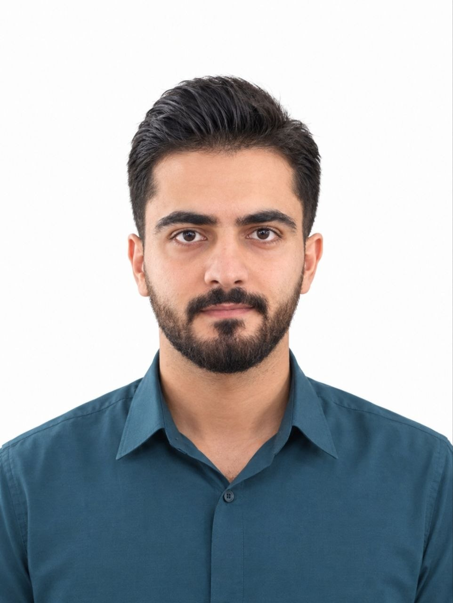
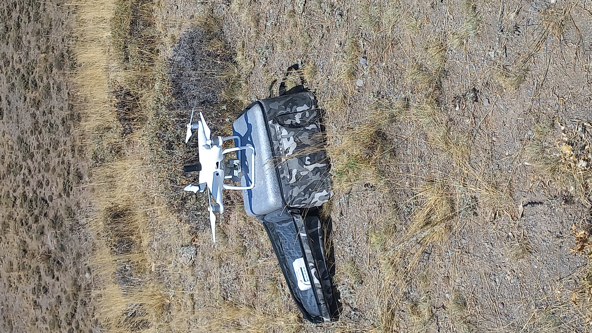
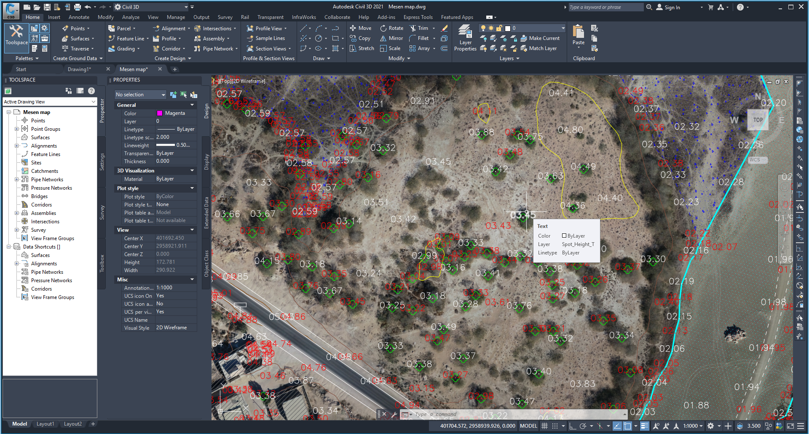
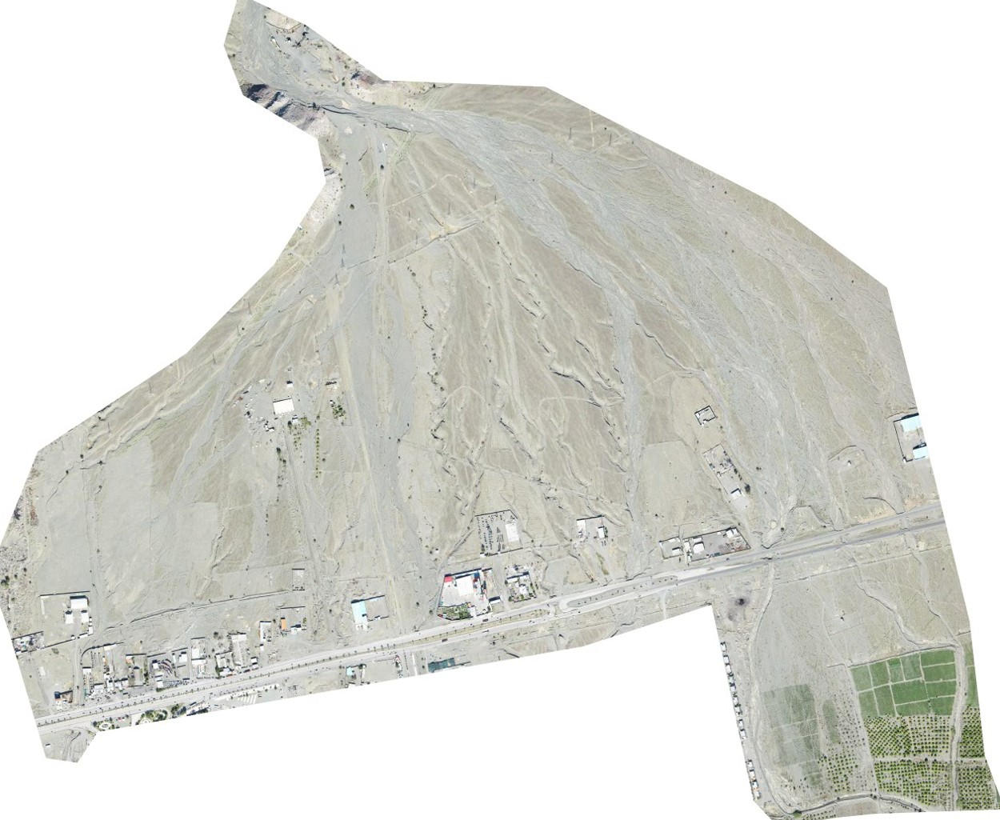
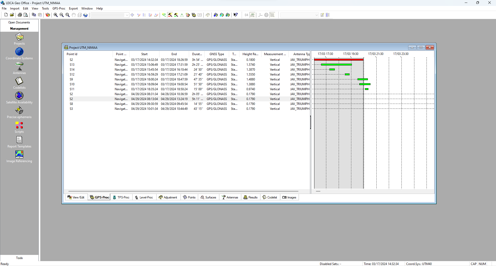
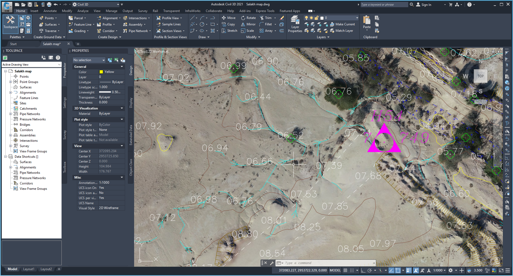

معدن · برداشت پهپادی
معدن مس سونگون
مشارکت در عملیات برداشت هوایی و پردازش دادههای فتوگرامتری. محصولات قابل ارائه در پروژههای معدنی شامل ارتوفتو، مدل ارتفاعی، مدل سهبعدی و محاسبه احجام، متناسب با نیاز کارفرما بوده است.
در حوزه نقشهبرداری زمینی و پهپادی، پردازش دادههای فتوگرامتری و تولید محصولات مکانی فعالیت داشتهام. علاقهمندم دانش مهندسی نقشهبرداری را با فناوریهای نوین تحلیل و نمایش اطلاعات مکانی پیوند بدهم.

من نیما محمدی، فارغالتحصیل کارشناسی مهندسی نقشهبرداری از دانشگاه تهران در سال ۱۴۰۴ و دانشجوی کارشناسی ارشد مهندسی نقشهبرداری، گرایش سیستمهای اطلاعات مکانی (GIS)، ورودی ۱۴۰۵ هستم.
تجربه فعالیت در پروژههای نقشهبرداری زمینی و اجرایی، معدن، راهسازی و سد باطله را دارم. همچنین در پروژههای نقشهبرداری هوایی با پهپادهای فانتوم ۴ و مویک ۳ اینترپرایز، در بخش عملیات پرواز، برداشت و پردازش نقاط کنترل زمینی، پردازش تصاویر و تولید محصولات فتوگرامتری مشارکت داشتهام.
در این پروژهها، متناسب با نیاز هر کار، تهیه ارتوفتو، مدل سهبعدی، مدل رقومی ارتفاعی (DEM)، محاسبه احجام، طبقهبندی و کارتوگرافی نقشهها و تحلیل هیدرولوژی مسیرهای آبریز انجام شده است.
نمونهای از محدودههایی که در پروژههای برداشت و پردازش دادههای مکانی در آنها فعالیت داشتهام. شرح محصولات، با توجه به دامنه هر پروژه، در ادامه آمده است.
مشارکت در عملیات برداشت هوایی و پردازش دادههای فتوگرامتری. محصولات قابل ارائه در پروژههای معدنی شامل ارتوفتو، مدل ارتفاعی، مدل سهبعدی و محاسبه احجام، متناسب با نیاز کارفرما بوده است.
فعالیت در عملیات برداشت پهپادی، برداشت و پردازش نقاط کنترل زمینی و پردازش تصاویر برای تولید دادهها و محصولات نقشهبرداری.
مشارکت در عملیات پرواز و فرایندهای برداشت و پردازش فتوگرامتری. نوع خروجی نهایی هر محدوده بر اساس شرح خدمات همان پروژه تعیین شده است.
فعالیت در برداشت هوایی و پردازش تصاویر و دادههای کنترل زمینی با هدف تهیه محصولات فتوگرامتری و نقشهای مورد نیاز پروژه.
مشارکت در عملیات برداشت پهپادی، پردازش تصاویر در Metashape و آمادهسازی خروجیهای نقشهبرداری متناسب با نیاز پروژه.
مشارکت در عملیات نقشهبرداری هوایی و فرایندهای برداشت و پردازش دادههای مکانی در محدوده نیروگاه بادی.
نقشهبرداری زمینی اجرایی در مسیرهای شهرستان تکاب–دندی و تکاب–شاهیندژ با استفاده از توتال استیشن و نیوو، بههمراه انجام امور دفتری از جمله محاسبه احجام و تهیه خروجیهای موردنیاز پروژه.
نقشهبرداری اجرایی برای احداث سد با هدف نگهداری باطلههای معدن طلای زرشوران، شامل محاسبه حجم خاکبرداری و عملیات پهنکردن ژئوممبران در کف سد.
مراحل زیر بخشهایی از فعالیتهایی هستند که شخصاً در پروژهها بر عهده داشتهام.
هدایت پهپادهای Phantom 4 و Mavic 3 Enterprise و اجرای عملیات برداشت هوایی.
برداشت میدانی و پردازش نقاط کنترل زمینی برای استفاده در فرایند فتوگرامتری.
پردازش تصاویر در Agisoft Metashape و تهیه ارتوفتو، DEM و مدل سهبعدی.
محاسبه احجام، طبقهبندی، کارتوگرافی و تحلیل هیدرولوژی مسیرهای آبریز در پروژههای مربوطه.
فارغالتحصیل رشته مهندسی نقشهبرداری از دانشگاه تهران.
تجربه فعالیت در حوزههای معدن، راهسازی و سد باطله و همچنین نقشهبرداری هوایی در یک شرکت مشاور. دارای گواهینامه خلبانی پهپاد RePL.
دانشجوی کارشناسی ارشد سیستمهای اطلاعات مکانی (Geographic Information Systems) در دانشگاه تهران.
در کنار فعالیتهای تخصصی، اوقات فراغتم را با ورزش، تجربههای تازه و وقتگذراندن با دوستانم سپری میکنم.
والیبال را بهصورت حرفهای دنبال میکنم و در کنار آن به باشگاه بدنسازی میروم. بعضی وقتها هم با دوستانم فوتبال و فوتسال بازی میکنم.
گاهی برای فاصلهگرفتن از شلوغی روزمره قدم میزنم، به پارک میروم و با هندزفری موسیقی گوش میدهم.
تماشای فیلمهای ایرانی و خارجی و دنبالکردن سریالها یکی از سرگرمیهای موردعلاقهام است.
گاهی هم سراغ کتاب میروم و زمانی را به مطالعه اختصاص میدهم.
بعضی وقتها همراه دوستانم به سفر میروم و از دیدن شهرها و مکانهای مختلف لذت میبرم.
گاهی برای یک دورهمی کوتاه به دیدن دوستانم میروم و با هم بازیهای گروهی، FIFA و PES انجام میدهیم.

عملیات برداشت پهپادی تجهیزات و نقاط کنترل زمینی
تجهیزات و نقاط کنترل زمینی
ارتوفتو و مدل ارتفاعی
مدل سهبعدی محدوده
محاسبه احجام
نقشه نهایی و کارتوگرافیبرای گفتوگو درباره پروژههای نقشهبرداری، فتوگرامتری، GIS و فرصتهای همکاری میتوانید از راههای زیر با من در ارتباط باشید.
زمینههای مورد علاقه برای همکاری شامل نقشهبرداری زمینی و پهپادی، پردازش فتوگرامتری، تولید محصولات ارتفاعی و نقشهای و تحلیل دادههای مکانی است.
این وبسایت با هدف معرفی سوابق تحصیلی، تجربههای اجرایی و نمونهکارهای تخصصی طراحی شده است.